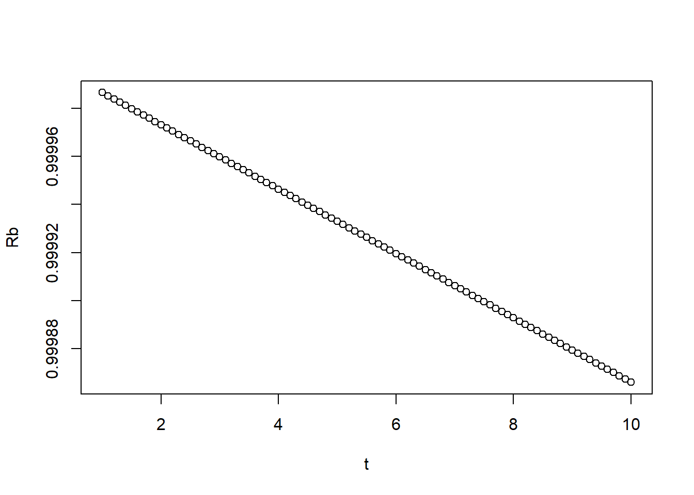

Capítulo 5 Aplicações
Neste capítulo apresentaremos alguns exemplos de aplicações de R.
5.1 Exemplo 1
5.1.1 Carregamento de dados
########################################################################################
#1-Carregamento de dados
#1.1-Dados do Covid19
# referencia(22-06-2020) - (https://data.brasil.io/dataset/covid19/_meta/list.html)
library(readr)## Error in library(readr): there is no package called 'readr'## Error in read_csv("data/caso.csv"): não foi possível encontrar a função "read_csv"5.2 Análise de dados
5.2.1 Análise Exploratória
## Error in library(readr): there is no package called 'readr'## Error in library("tidyverse"): there is no package called 'tidyverse'## Error in library("tidyr"): there is no package called 'tidyr'## Error in library(ggplot2): there is no package called 'ggplot2'## Error in read_delim("data/HIST_PAINEL_COVIDBR_21jun2020.csv", ";", escape_double = FALSE, : não foi possível encontrar a função "read_delim"## Error in as.Date(caso_MS$data, "%m/%d/%Y"): objeto 'caso_MS' não encontrado## Error in eval(lhs, parent, parent): objeto 'caso_MS' não encontrado## Warning in min(x): nenhum argumento não faltante para min; retornando Inf## Warning in max(x): nenhum argumento não faltante para max; retornando -Inf## Warning in min(x): nenhum argumento não faltante para min; retornando Inf## Warning in max(x): nenhum argumento não faltante para max; retornando -Inf## Error in plot.window(...): valores finitos são necessários para 'xlim'
## Error in eval(lhs, parent, parent): objeto 'caso_MS' não encontrado## Warning in min(x): nenhum argumento não faltante para min; retornando Inf
## Warning in min(x): nenhum argumento não faltante para max; retornando -Inf## Warning in min(x): nenhum argumento não faltante para min; retornando Inf## Warning in max(x): nenhum argumento não faltante para max; retornando -Inf## Error in plot.window(...): valores finitos são necessários para 'xlim'## Error in UseMethod("weekdays"): método não aplicável para 'weekdays' aplicado a um objeto de classe "NULL"## Error in ggplot(caso_MS_BR, aes(x = data, y = quantidade, fill = dayweek)): não foi possível encontrar a função "ggplot"